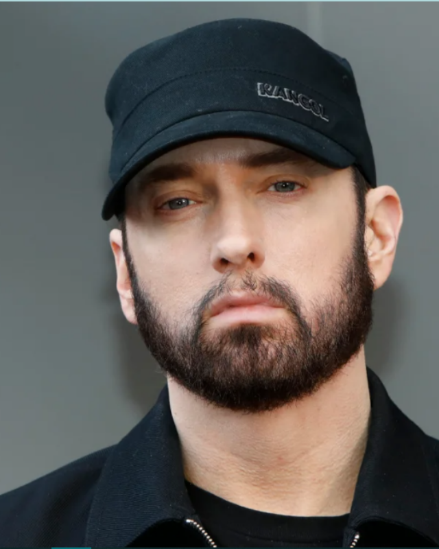
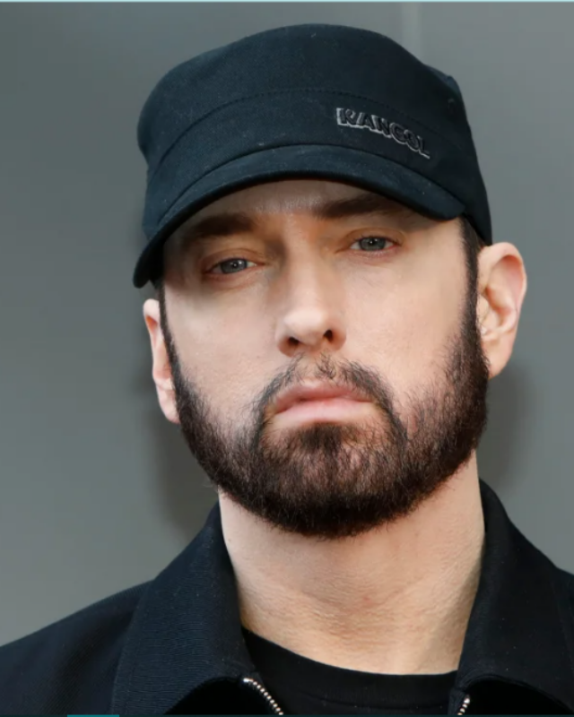

[Intro:]
Cause sometimes you just feel tired.
You feel weak and when you feel weak you feel like you wanna just give up.
But you gotta search within you, you gotta find that inner strength
and just pull that shit out of you and get that motivation to not give up
and not be a quitter, no matter how bad you wanna just fall flat on your face and collapse.
[B/W Intro:]
Go left, go left, go left right left
Go left, go left, go left right left
Go left, go left, go left right left
Go left, go left, go left right left
[Verse #1:]
Till I collapse I'm spilling these raps long as you feel em
Till the day that I drop you'll never say that I'm not killing them
Cause when I am not then I am stop pinning them
And I am not hip-hop and I'm just not Eminem.
Subliminal thoughts when I'm stop sending them women are caught in webs spin and hauk venom
Adrenaline shots of penicillin could not get the illing to stop. Amoxacilin is just not real
enough.
The criminal cop killing hip-hop filling minimal swap to cop millions of Pac listeners.
Your coming with me, feel it or not you're gonna fear it like I showed you the spirit of god
lives in us.
You hear it a lot, lyrics the shock is it a miracle or am I just a product of pop fizzing up.
For shizzle my whizzle this is the plot listen up you bizzles forgot slizzle does not give a
fuck.
[Chorus - NateDogg]
Till the roof comes off, till the lights go out
Till my legs give out, can't shut my mouth.
Till the smoke clears out and my high wear out
I'ma rip this shit till my bone collapse.
Till the roof comes off, till the lights go out
Till my legs give out, can't shut my mouth.
Till the smoke clears out and my high wear out
I'ma rip this shit till my bone collapse.
[Verse #2:]
Music is like magic there's a certain feeling you get when your real
and you spit and people are feeling your shit.
This is your moment and every single minute you spend trying to hold onto it
cause you may never get it again.
So while you're in it try to get as much shit as you can
and when your run is over just admit when its at its end.
Cause I'm at the end of my wits with half this shit that gets in.
I got a list here's the order of my list that it's in.
It goes, Reggie, Jay-Z, Tupac and Biggie, Andre from Outcast, Jada, Kurupt,
Nas and then me. But in this industry I'm the cause of a lot of envy,
so when I'm not put on this list the shit does not offend me.
That's why you see me walk around like nothing's bothering me.
Even though half you people got a fucken problem with me.
You hate it but you know respect you've got to give me
The press's wet dream like Bobby and Whitney. Nate hit me.
[Chorus - NateDogg]
[Verse #3:]
Soon as a verse starts I eat it at MC's heart
what is he thinking? I'ma not to go against me, smart.
And its absurd how people hang on every word.
I'll probably never get the props I feel I ever deserve
But I'll never be served my spot is forever reserved
If I ever leave earth that would be the death of me first.
Cause in my heart of hearts I know nothing could ever be worse.
That's why I'm clever when I put together every verse
My thoughts are sporadic, I act like I'm an addict
I rap like I'm addicted to smack like I'm Kim Mathers.
But I don't want to go forth and back in constant battles
The fact is I would rather sit back and bump some rappers.
So this is like a full blown attack I'm launching at them
The track is on some battling raps who want some static
Cause I don't really think that the fact that I'm Slim matters
A plaque of platinum status is whack if I'm not the baddest.
[Chorus - NateDogg]
[Outro:]
[Eminem & Natedogg Echo:]
Until the roof
The roof comes off
Until my legs
give out from underneath me
[Eminem:]
I will not fall,
I will stand tall,
Feels like no one could beat me.